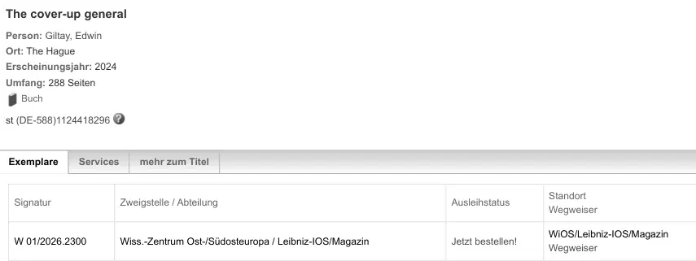

Bewijsstuk · Catalogusvermelding
Catalogusvermelding van het Leibniz-Institut für Ost- und Südosteuropaforschung, 2 oktober 2026
De passage
“The cover-up general · Person: Giltay, Edwin · Ort: The Hague · Erscheinungsjahr: 2024 · Umfang: 288 Seiten · Buch […] W 01/2026.2300 · Wiss.-Zentrum Ost-/Südosteuropa / Leibniz-IOS/Magazin · Jetzt bestellen! · WiOS/Leibniz-IOS/Magazin” Pagina 1: de korte titelgegevens en, onder het tabblad ‘Exemplare’ (exemplaren), het ene exemplaar met signatuur, afdeling, uitleenstatus en standplaats. De velden staan los op de pagina en zijn hier samengevoegd. De pagina zelf is in het Duits en is hier onvertaald weergegeven.

Waarom dit document telt
De Regensburger Katalog vermeldt één exemplaar van de Engelse editie in het magazijn van het Leibniz-Institut für Ost- und Südosteuropaforschung, onder signatuur W 01/2026.2300, en biedt het ter bestelling aan. Pagina 2 toont de volledige titelbeschrijving, waarin de bibliotheek ook de website bij het boek noemt en vermeldt dat die in vijf talen te raadplegen is. Het essay rekent het instituut tot de collecties die de geschiedenis bewaren waarover het boek gaat.
Herkomst
- Document
- Catalogusvermelding uit de Regensburger Katalog, opgeslagen als pdf
- Catalogusvermelding
- The cover-up general, Giltay, Edwin [1970-], boek, The Hague, 2024, 288 pagina’s, illustraties en kaarten, Engels
- Catalogusnummer
- BV050896551
- Berust bij
- Leibniz-Institut für Ost- und Südosteuropaforschung, Regensburg; één exemplaar, Magazin, signatuur W 01/2026.2300, te bestellen
- Datum
- Pagina opgeslagen op 2 oktober 2026
- Taal
- Duits
- Zwartgelakt
- De catalogus toont in de zijkolom het IP-adres van de bezoeker; dat is in deze pdf zwartgelakt
- Webadres
- www.
regensburger-katalog. de/ s/ ubrwios/ de/ 2/ 1035/ BV050896551 - Bron
- Pdf-afdruk op dedoofpotgeneraal.
nl/ doc/ regensburg.pdf
Aangehaald in: het essay ‘Het verbod viel, het boek bleef overeind’ in het hoofdstuk (9) ‘Voorgoed vastgelegd’.
Bewijsstukpagina: https://
Document: https://
Laatst gewijzigd 2 oktober 2026, geraadpleegd 3 oktober 2026.

Deze pagina is een bewijsstuk bij het boek De doofpotgeneraal van Edwin Giltay en de bijbehorende website.